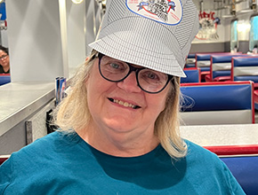
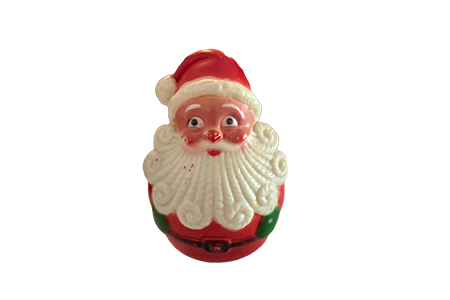
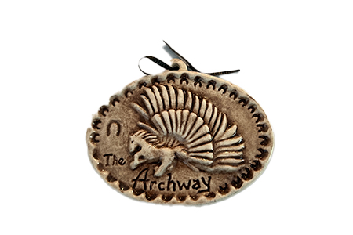
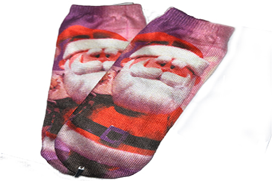
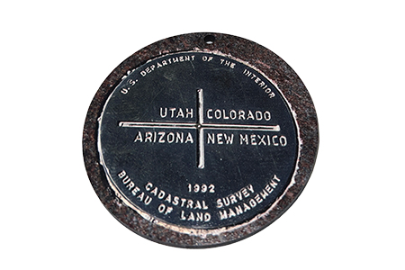
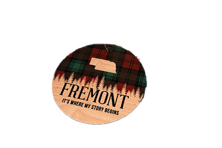

This is the first Santa that Linda bought for her first-born daugther for her first Christmas.One of Linda's favorite jobs involved working for Oriental Trading. This Santa ducky is a momento she had from this time in her life.

One of Linda's favorite things to do is to take a yearly road trip with her kids and husband. This ornament is from her first road trip with these family members after retiring.

These socks were given to Linda by her late mother. Eleanor thought that Linda needed a pair of Santa socks. Linda cherishes this gift.

Linda picked up this ornament from her first cross country road trip with her husband during retirement.

This ornament means a lot to Linda as Fremont is the birthplace of her husband. She has spent a lot of time in Fremont since meeting him.